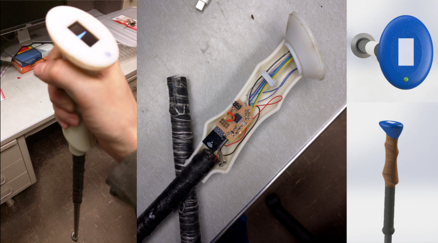
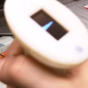
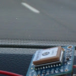

Christopher Robert Saulnier

PhD Candidate,
Product Design and Engineering Education
MIT-SUTD Collaboration Office
Massachusetts Institute of Technology
Contact:
77 Mass. Ave, Building 3-339L, Cambridge, MA, 02139.
saulnier at mit dot edu
MIT-SUTD Collaboration Office
Massachusetts Institute of Technology
Contact:
77 Mass. Ave, Building 3-339L, Cambridge, MA, 02139.
saulnier at mit dot edu
GPS Location Aware Trekking Pole

While taking MAS.863, the MIT Media Lab class better known as How to Make (Almost) Anything I individually developed and prototyped a location aware trekking pole. The final prototype was built using 3D printing, casting, composite thermomolding, and custom circuit board design and production via milling. The custom circuit boards were my own design consisting of arduino compatible boards built around an Atmega328P, using an nRF24L01+ for RF communication and the MTK3339 GPS Module alongside an OLED screen for output.
How to Make (Almost) Anything I individually developed and prototyped a location aware trekking pole. The final prototype was built using 3D printing, casting, composite thermomolding, and custom circuit board design and production via milling. The custom circuit boards were my own design consisting of arduino compatible boards built around an Atmega328P, using an nRF24L01+ for RF communication and the MTK3339 GPS Module alongside an OLED screen for output.';" alt="" title="" border="">




© Chris Saulnier 2018